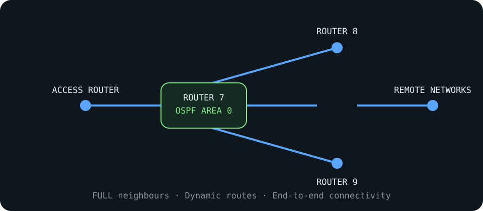

rafael@cloud:~/projects$ cat ospf-network-lab.md
Cisco OSPF Network Lab
A multi-router network configured and troubleshot to achieve dynamic routing and end-to-end connectivity.

Project Outcome
Completed
Configured router interfaces and OSPF Area 0 across four routers in Cisco Packet Tracer. All neighbours reached the FULL state and remote networks were learned dynamically.
Technologies
Validation
✓ Verified interfaces with show ip interface brief
✓ Confirmed OSPF adjacencies with show ip ospf neighbor
✓ Verified learned routes with show ip route
✓ Confirmed cross-network communication with ping tests
✓ Saved the validated running configuration
Troubleshooting Approach
Identified missing interface addressing and incomplete routing configuration, corrected each layer systematically, and retested until full connectivity was restored.